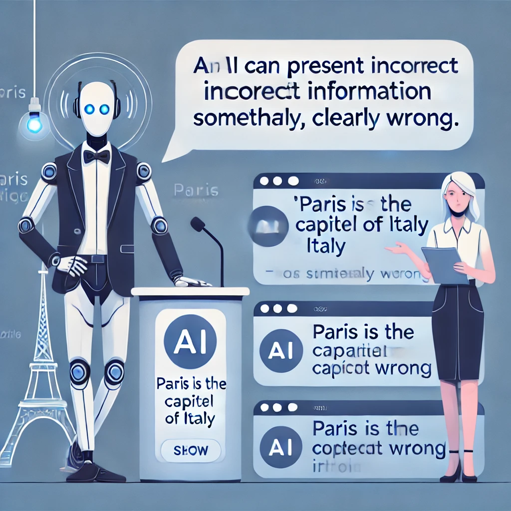
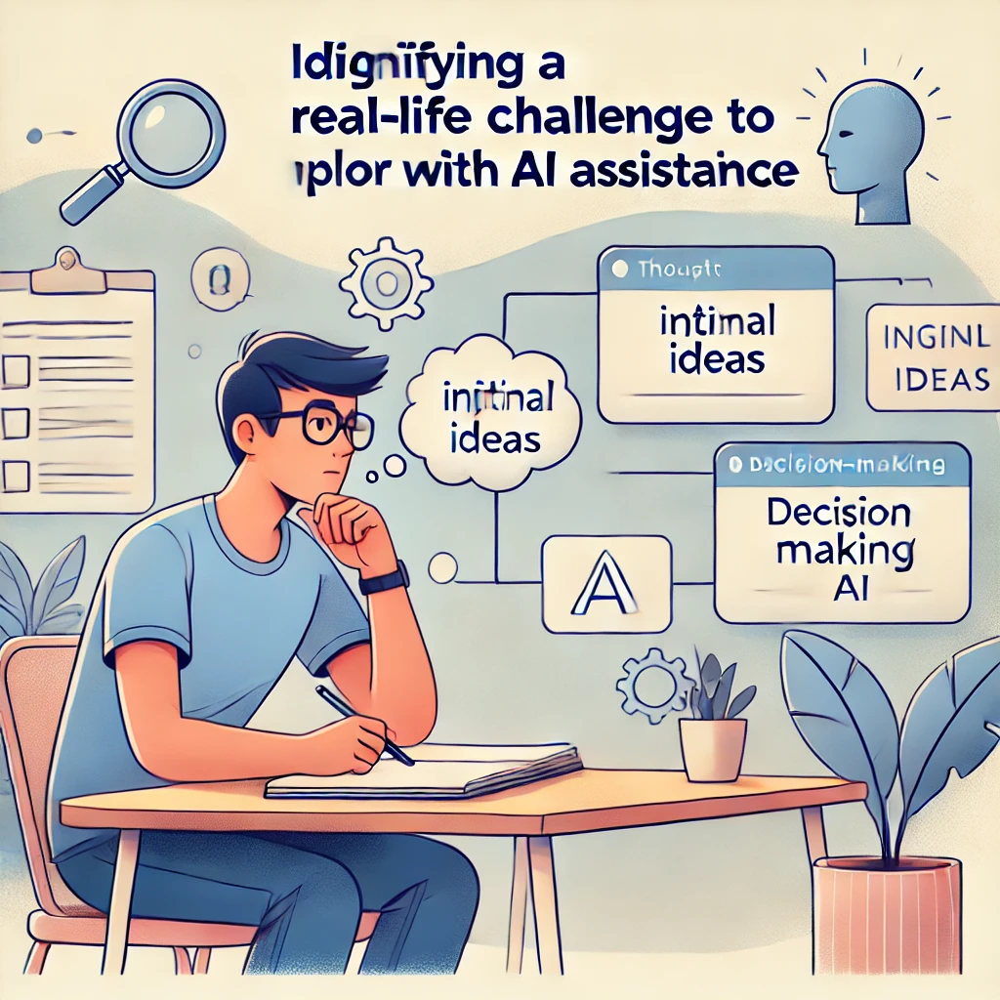

A Practical Guide to Using AI in Everyday Life
新しいテクノロジーを使う人を見て、それが簡単そうに見えるのに、自分でやってみると途方に暮れた経験はありませんか？あるいは、ChatGPTや他のAIツールについてニュースで耳にしても、それが複雑すぎたり技術的すぎたりして、まだ試していないのではないでしょうか？
あなたは一人ではありません。多くの人がこれらのテクノロジーに威圧感を感じたり、どこから始めればよいかわからなかったりします。良いニュースは、これらのツールを効果的に使うためにテクノロジーの専門家である必要はないということです。実際、必要なスキルは好奇心、判断力、そしてあなた自身が大切にしていることについての独自の視点など、あなたがすでに持っているものです。
この本が取り上げるのはまさにそのことです：あなたにとって重要なことを達成するために、人間としての知恵とAIツールをどう組み合わせるかをお伝えします。私たちはこのパートナーシップを実践的知性と呼んでいます——テクノロジーではなく、あなた自身がプロセスの中心となるフレームワークです。
本題に入る前に、次の質問に対するあなたの答えを書き留めてみてください：

これらの答えをお手元に置いておいてください。この章を進めていく中で、あなたの最初のAI体験をパーソナライズするのに役立ちます。
この先のページでは、AIツールについて考えるためのシンプルなフレームワークを確立し、（技術的な知識は不要で！）いかに簡単に使い始められるかを実証し、さらにあなたの方向性と判断力が価値ある結果を得るための重要な要素であることをお示しします。
これらの強力なツールを自信を持って効果的に活用していく旅を、最初のやり取りから始めましょう。
…人間とAIのパートナーシップ
まずは簡単なことから始めましょう。技術的なスキルは必要ありません—単に文章を入力する能力だけです。
こんにちは、ChatGPTは初めてです。あなたが私をどのように助けられるか、簡単な言葉で説明してくれますか？これだけです！あなたは最初のAI会話を経験しました。

AIが自己紹介し、その機能を説明することに注目してください。これは事前に録音されたメッセージではなく、AIがあなた専用に生成した回答です。これからの章では、これらの会話をあなた特有のニーズにますます役立てる方法を学びます。
技術的なバックグラウンドを持たない小規模ビジネスオーナーのマリアは、初めての経験をこう描写しています：
「正直、複雑なものを予想していました—特別なコマンドを学ぶ必要があるとか。でも、それはテキストメッセージのようなものでした。より良いメールニュースレターの書き方を尋ねたら、数秒以内に実際に使えるアイデアが得られました。専門用語も複雑な設定も必要ありませんでした。」
AIツールをキッチン家電のように考えてみましょう。スタンドミキサーは生地を混ぜる大変な作業をこなしますが、どのレシピを作るかを決めたり、ちょうど良い硬さになったかを知ったりはしません—それはあなたの仕事です。ミキサーは特定のタスクに非常に長けていますが、味覚を持ち、レシピを修正する創造性を持ち、誰かの食事制限に合わせて調理しているかどうかを知っているのはあなたです。

実践的知性とは、あなたの人間としての判断力とAIの能力とのこのパートナーシップのことです。あなたの知恵、創造性、目的とAIの情報処理能力やコンテンツ生成能力が組み合わさったときに生まれるものです。
問題を解決するために強力なツールを使った最後の経験を思い出してください。料理の準備時間を半分に減らしたフードプロセッサーや、見知らぬ街を案内してくれたマッピングソフトウェアかもしれません。ツールは非常に価値がありましたが、何を料理するか、どこに行くかを決めたのはあなたでした。それがAIとのあなたの関係と全く同じです—あなたはただボタンを押すだけではなく、指示を出すクリエイティブディレクターなのです。

AIを独自の心を持つ魔法のような存在と考えるのではなく、この単純な関係を考えてみましょう：
なぜこの関係がそれほど重要なのでしょうか？それを理解することで、これらのツールの日々の使い方が変わるからです。
あなたがディレクターであり、AIがあなたのアシスタントであることを認識すると、AIが生成するものを受動的に受け入れるのではなく、自然にプロセスを主導するようになります。これらのツールがあなたのために何ができるか（そして何ができないか）についてより明確な期待を持つようになります。AIが複製できない人間特有のスキルを強化することに集中します。そして恐らく最も重要なことに、あなたの仕事やアイデアの所有権を維持します。
これらのツールにアプローチするより力強い方法ではないでしょうか？
実際の例を通して、このパートナーシップがどのように機能するかを見てみましょう。
AIの経験がない中学校の理科教師のリサは、気候変動に関する授業を作りたいと考えていました。彼女はChatGPTに単に7年生向けの気候変動の授業を作成してと頼み、生成されたものを使うこともできましたが、それでは彼女が生徒について持つユニークな知識を無視することになります。

その代わりに、リサは人間としての判断力を適用しました。彼女は特定の生徒たち—彼らの知識レベル、興味関心、そして彼らが毎日目にする地域の環境問題について知っていました。彼女は過去の授業で彼らがどの概念に苦戦したかを理解していました。
AIが持ち得ないこの文脈を持って、リサはChatGPTにより具体的なリクエストを指示しました：水循環についてはすでに学んでいるが抽象的な概念に苦戦している7年生に適した、温室効果ガスの仕組みを示すインタラクティブなデモを作るのを手伝ってください。
結果として生まれた授業は、リサの生徒に対する理解とAIの創造的な教育アイデアを生成する能力を組み合わせたため、はるかに効果的なものになりました。それが実践的知性の働きです—AIを強力なツールとして活用しながら、あなたがプロセスの中心に残るのです。
さて、あなたの番です。あなた特有の関連性を持つプロンプトを作成しましょう。以下の空欄を埋めてください： 私は_____________として働いており、よく直面する課題の一つは_____________です。この問題に取り組むための3つの方法を提案していただけますか？

例えば： 私は小売店のマネージャーとして働いており、よく直面する課題の一つはスタッフのスケジュールを効率的に組むことです。この問題に取り組むための3つの方法を提案していただけますか？
または
私は親として、よく直面する課題の一つは雨の日の教育的な活動を見つけることです。この問題に取り組むための3つの方法を提案していただけますか？
次のセクションでは、人間の知性が持つユニークな特性と、それがAIの能力をどのように補完するかを探ります。しかし覚えておいてください、これらのツールを今日から効果的に使い始めるために、すべての技術的な詳細を理解する必要はありません。
あなたは疑問に思っているかもしれません…「これらのAIツールを効果的に使うには、コーディングやコンピューターサイエンスを学ぶ必要があるのでしょうか？」
簡単な答えはいいえです。ChatGPTのようなAIツールの使用は、検索エンジンの利用やテキストメッセージの送信以上の技術的スキルを必要としません。質問を入力できれば、AIを使用できます。

技術的な知識よりもはるかに重要なのは、あなたの以下の能力です：
これらは、あなたが人生を通じて培ってきた人間のスキルであり、パートナーシップにおいてあなたが実践的知性である理由でもあります。
AIツールを効果的に使用するには、人間の知性とAIの違いを理解し、その違いがなぜ強力なパートナーシップを生み出すのかを知ることが役立ちます。
人間の知性には、現在のAIシステムが印象的な能力にもかかわらず単純に持っていない特質がいくつかあります：
人間は単に何かをするのではなく、理由があって行動します。私たちは「なぜ」という質問をし、価値観に基づいて目標を設定し、意味のあることを達成すると満足感を得ます。私たちは活動の裏にある目的を深く気にかけ、単にそれを済ませることだけではありません。
対照的に、AIシステムには本質的な目的や欲求はありません。彼らは何かを「望む」ことはなく、単に入力を処理して出力を生成するだけです。目的意識はそれを使用する人間から来なければなりません。

生きた経験を通して構築された世界に対するあなたの豊かな理解について考えてみてください。傘なしで雨に降られたときの感覚を知っています。予期せぬ良いニュースを受け取ったときの感情的な重みを理解しています。家族の集まりの微妙な社会的力学を把握しています。
ChatGPTのようなAIシステムは、世界を描写する膨大なテキストでトレーニングされていますが、実際にその中で生きたことはありません。アイスクリームについて「読んだ」ことはあっても、実際に味わったことはありません。雨に降られるとどんな感じかを説明できますが、突然の冷たい水しぶきを感じたり、急いで避難したりした経験はありません。それは旅行ガイドを読むことと実際に場所を訪れることの違いのようなものです—ガイドがどれほど詳細であっても、言葉では捉えられない経験の本質的な何かがあります。
退職した美術教師のエレナは、水彩画の趣味にAIを使うことに懐疑的でした。「コンピュータープログラムが芸術のような個人的なものにどう役立つのか分かりませんでした」と彼女は言いました。しかし、彼女がChatGPTに紅葉をより鮮やかに描くためのアドバイスを求めたとき、彼女は心地よい驚きを感じました。

「提案された技術は基本的な基礎でした—私が自分の生徒に教えるようなことです。しかし、私は依然として色に対する感覚、構図のセンス、そして自分の美的好みを適用する必要がありました。AIは検討すべき選択肢を与えてくれましたが、創造的な決断は私のものでした。」
これは別の重要な違いを示しています：人間の創造性は、予期せぬつながりを作ること、一見無関係なアイデアからインスピレーションを得ること、あるいは完全に説明できない突然の洞察を持つことを含むことがよくあります。私たちの直感により、微妙な手がかりや長年の経験に基づいて判断を下すことができます。
AIは既存のアイデアを印象的な方法で再結合することはできますが、本物のインスピレーションのきらめきや、明示的に知られていることを超えた飛躍を人間に可能にする直感的なセンスを持っていません。
これらの違いは弱点ではなく、強力なパートナーシップの基盤です。AIと人間は相補的な強みを持つチームメイトのようなものです。
あなたが愛する人に影響を与える健康状態を調査しているとします。医学雑誌を何週間も読み、複雑な専門用語や矛盾する研究を理解しようとすることもできます。または、現在の研究をまとめ、重要な用語を説明し、治療選択肢を強調するようAIに依頼することもできます—すべて数分で。これがAIが真に輝く部分です：最も熱心な人間の読者でも圧倒されるような膨大な量の情報を処理します。

AIが優れている点：
情報処理：膨大な量の情報を迅速に統合し、膨大なデータセット全体でパターンを見つけること。
一貫した出力：退屈になったり、気が散ったり、感情的になったりすることなく疲れ知らずに働くこと。
迅速なアイデア生成：問題に対する複数の選択肢、草案、アプローチを数秒で生成すること。
パターンからの学習：人間が見落としがちなデータの傾向と関連性を特定すること。
この関係を理解するための役立つ方法は、あなた自身を映画監督、AIをあなたのアシスタントと考えることです。

監督として、あなたは：
AIアシスタントは：
監督がいなければ、アシスタントには目的や方向性がないでしょう。アシスタントがいなければ、監督はすべての小さな詳細を一人で処理しなければなりません。
では、これは実際にはどのように見えるのでしょうか？技術的なバックグラウンドを持たない小規模ビジネスオーナーのマーカスが、このパートナーシップをどのように実践しているかを見てみましょう。
マーカスは成功したベーカリーを所有しており、2番目の場所をオープンすることを検討しています。単に「2番目のベーカリーの場所をどこにすべきか？」とAIに尋ねるのではなく（これは、彼の特定のビジネスを知らないとAIが適切に答えられない質問です）、マーカスはより具体的なプロンプトでAIに指示します：

新しいベーカリーの場所を選ぶ際に分析すべき人口統計データは何ですか？ベーカリー用の潜在的な小売スペースを評価するためのチェックリストを作成するのを手伝ってください。ベーカリーが2つ目の場所をオープンする際に直面する典型的な課題は何ですか？ここにパターンがあることに注目してください—各質問はAIの情報を整理する能力を活用しながら、マーカスを意思決定者の役割にしっかりと保ちます。AIは価値ある枠組みと情報を提供しますが、最終的な決断はマーカスが下します。これは彼のリスク許容度、異なる地域に対する直感、そして彼のブランドに対するビジョンなど、彼だけが完全に理解できる要素に基づいています。
次のセクションでは、これらのAIツールが実際にどのように動作するかを簡単な言葉で探索します。これにより、技術的なバックグラウンドを必要とせずに、それらの能力と限界を理解するのに役立ちます。
AIツールを効果的に指示するためには、すべての技術的な詳細を理解する必要はありません—ちょうど効果的に運転するために車のエンジンがどのように機能するかを正確に知る必要がないのと同じです。しかし、基本的な概念的理解を持つことで、現実的な期待を設定し、これらのツールをより巧みに使用するのに役立ちます。
ChatGPTのようなAIツールがどのように機能するか、その能力と限界の両方を強調するシンプルな類推を使って探ってみましょう。
「AIについて初めて聞いたとき、SF映画からのようなもの—考えたり感じたりするコンピューターのようなものを想像していました」と、現在、家系図の趣味のためにChatGPTを毎日使用している退職者のジェームズは言います。「しかし使い始めると、それは非常に博識で信じられないほど速い研究助手のようなものだが、慎重な指示が必要だということに気づきました。」

核心部分では、ChatGPTのようなAIは洗練されたパターン補完マシンです。友人と文章を始めて相手に完成させてもらうゲームをしているところを想像してください：
あなた：シェフはケーキを...に入れました
友人はほぼ確実に次のように答えます：オーブン
なぜでしょうか？彼らが人生を通じて遭遇したすべての言語に基づいて、このコンテキストでは「オーブン」が次に来る可能性が最も高い言葉だからです。
ChatGPTも同様のことをしますが、はるかに大規模です。書籍、記事、ウェブサイト、その他のソースからの膨大な量のテキストでトレーニングされてきました。このトレーニング中に、単語やアイデアが典型的にどのように互いに続くかのパターンを認識することを学びました。

それは、音楽理論を実際に理解していないが何千もの曲を聴いた音楽家のようなものだと考えてください。あなたが数音をハミングすると、その音楽家は以前に聞いた類似のパターンに基づいてメロディーを続けることができます。彼らは真に独創的なものを作曲しているのではなく、あなたが始めたパターンを続けるために彼らが吸収したすべての音楽を引き出しているのです。
これらのAIツールを考える上で役立つもう一つの方法は、人間の知識のエコーチェンバーとしてです。彼らは、トレーニングされたデータの中にすでに存在する情報とパターンだけを反映することができます。

ChatGPTにフランス革命について尋ねると、多くの人間の作家がこのトピックについて書いており、それらの文章がトレーニングデータの一部だったため、情報を提供することができます。しかし、誰も書いたことがない完全に架空の歴史的出来事について尋ねると、そのパターンがトレーニングデータに存在しないため、正確な情報を提供することができません。
これはAIツールが：
人間のようなテキストを生成する印象的な能力にもかかわらず、ChatGPTは実際には人間のように単語の意味を「理解」していません。それは、より深い概念や実世界の経験にそれらの単語を結びつけるのではなく、統計的パターンに基づいて、どの単語が互いに続く可能性が高いかを予測します。
外国語で料理本を暗記したが、単語の意味を理解していない人のようなものを考えてみてください。彼らは完璧にレシピを暗唱し、観察したパターンに基づいて合理的な代替品を提案することさえできるかもしれませんが、食べ物の味を知らず、材料の感触を感じたこともなく、なぜ特定の技術が使用されるのかを理解していません。

この限界は、AIがしばしば以下のことに苦労する理由を説明しています：
ChatGPTがテキストを生成するとき、それは本質的に確率に基づいた一連の単語選択を行っています。メロディーの次の音符を推測するようなものです。文の各位置において、先行する単語と全体的なコンテキストを考慮して、次に来る可能性が最も高い単語を計算します。
あなたが文を始め、誰かが次に来る単語を推測しなければならないゲームを想像してください：
シェフはケーキを...に入れました
多くの人が「オーブン」と推測するでしょう。なぜならそれがこのコンテキストで続く可能性が最も高い単語だからです。AIシステムも同様のことをしますが、言語パターンの理解がはるかに洗練されており、選択肢の語彙がはるかに多いです。

この確率的アプローチは以下を意味します：
AIがどのように機能するかについてのこれらの基本を理解することは、その印象的な能力と驚くべき限界の両方を説明するのに役立ちます：
人間のようなテキストを生成できる。膨大な量の人間の文章からパターンを学んだため
多くのトピックに関する情報を提供できる。多様なテキストでトレーニングされているため
事実の正確さに苦労する。真実を検証するのではなく、もっともらしいテキストを予測しているため
真に推論したり理解したりすることはできない。意味を理解するのではなく、パターンを一致させているため
経験や目標を持っていない。意識のある存在ではなく、テキスト予測システムであるため
これらの特性により、AIツールは特定のタスクに非常に役立ちますが、人間の指示と判断—あなたの実践的知性—が依然として不可欠である理由も強調しています。
これらの限界を考えると、AIツールを専門家や権威者ではなく、アシスタントとして考えるのが役立ちます。アイデアを出したり、コンテンツを起草したり、情報をまとめたり、アイデアを探索したりするのを手伝うことはできますが、常に自分の判断をその出力に適用すべきです。

日本への家族旅行を計画しているジェイクを思い出してください。彼が単にChatGPTに「完璧な日本旅行を計画して」と尋ね、生成された旅程に従うだけなら、彼の家族の興味に合わない一般的な観光体験をしたり、改修中で閉鎖されている観光スポットを訪れたりする可能性があります。
代わりに、ジェイクはAIの限界についての理解を使って、ツールをより効果的に指示します。彼は以下のことを知っています：
そのため、彼はAIを特定のタスク（東京での子供向けアクティビティのアイデアの生成、基本的な日本語フレーズの言い回しの提案、荷物チェックリストの作成など）のアシスタントとして使用します。これらはパターンマッチングが役立つタスクです。一方で、重要な判断は自分自身で行い、重要な情報は他のソースで確認します。
次のセクションでは、この人間とAIのパートナーシップをコントロールして、これらの強力だが限られたツールから最大の価値を得る方法を探ります。
人間の知性とAIの能力の関係を理解したところで、あなたのAI体験を成功させる2つの重要な要素に焦点を当てましょう：これらのツールを効果的に指示する方法と、それらに対して現実的に何を期待すべきかです。
映画監督の比喩を覚えていますか？AIツールの効果的なディレクターであることの意味について掘り下げてみましょう。

映画監督が単に俳優に「良いシーンを作って」と言って最善を期待するのではないように、あいまいなリクエストとAIが生成するものを受動的に受け入れるアプローチをすべきではありません。ディレクターのマインドセットにはいくつかの重要な実践が含まれます：
「以前はChatGPTにあいまいな質問をして、一般的な回答にイライラしていました」と小規模ビジネスコンサルタントのデイビッドは説明します。「今ではアプリを開く前に、必要なことを正確に明確にする時間を必ず取ります。」
AIに取り組む前に、自問してみましょう：
この明確さは、より効果的な指示を出し、AIの回答をより批判的に評価するのに役立ちます。
–
あいまいなプロンプトは一般的な回答につながります。指示が具体的であればあるほど、AIの支援はより有用になります。これらのアプローチを比較してみましょう：
あいまいな指示： 「マーケティングのアイデアをいくつか教えて。」
具体的な指示： 「健康志向の家族をターゲットにした地元のオーガニックファームスタンドを経営しています。持続可能な農業実践とコミュニティルーツを強調するのに役立つ低予算のマーケティングアプローチを5つ提案してください。」

具体的な指示は、AIがあなたのニーズに合わせた関連性のある回答を生成するのに役立つコンテキストと制約を提供します。
–
AIとの作業は、一度きりのプロセスであることはめったにありません。それを単一の質問と回答ではなく、会話として考えてください。
「最初はAIが与えてくれたものをそのまま受け入れていました」とフリーランスライターのプリヤは言います。「今では、やり取りの中で魔法が起こることを知っています。『それは堅すぎる』とか『Xについてもっと例を追加できますか』と言うと、結果は劇的に良くなります。」
あなたのニーズを十分に満たさない最初の回答に満足しないでください。代わりに、フィードバックと追加の指示を提供して、AIをより有用な出力に導きましょう：
それは役立ちますが、もっと簡単にできますか？3番目のアイデアが一番良いです。そのアプローチについて具体的に詳しく説明してもらえますか？これらの例は技術的すぎます。この分野のバックグラウンドがない人向けに書き直してもらえますか？–
AI生成コンテンツに健全な懐疑心でアプローチしましょう。自問してみましょう：

あなたが品質と適切さの最終的な判断者であることを忘れないでください。AIはあなたを支援するためにあり、最終決定を下すためではありません。
人間の指示とAIの能力を組み合わせると、素晴らしいことが起こります：どちらも単独で達成できる以上に増幅されます。これが実践的知性の本質です。
この増幅は、実際の課題に適用されるとき特に強力になります。高校の英語教師であるサラが、カリキュラムを計画するときにこの増幅をどのように経験するかを考えてみましょう：
10年生の英語クラスのために「アイデンティティ」に関するユニットを設計する必要があります。私の生徒の多くは第一世代のアメリカ人で、文化間を行き来する課題についてよく議論します。多様な著者からのアイデンティティ形成を探求する現代的な短編小説を提案し、各物語について、移民の経験に関連する潜在的な議論の質問を概説してください。

この指示により、ChatGPTは迅速に提案を生成し、サラはそれを彼女の専門的な判断、特定の生徒の知識、カリキュラムの要件に基づいて評価します。彼女はいくつかの提案を受け入れ、他のものを修正し、彼女のビジョンに合わないものを拒否するかもしれません。
結果は、サラの専門知識と生徒の理解を反映したカリキュラムですが、完全に自分だけで作業するよりも効率的に、より広範な視点で開発されました。それが実践的知性の働きです。
AIツールを効果的に活用する上での最大の課題の1つは、現実的な期待を設定することです。メディアのハイプはしばしばAIを魔法の思考マシンや人類への差し迫った脅威として提示しますが、どちらもChatGPTのような現在のツールの現実を正確に反映していません。
「AIに関するニュースにはすべて正直に脅迫されました」と引退した会計士のラジは認めます。「使用するには impossibly complexか、不気味なほど人間らしいかのどちらかを期待していました。現実はずっと現実的でした—ある面では役立ち、別の面では限られています。」
これらのツールをより効果的に使用するために、それらができることとできないことのバランスの取れた理解を確立しましょう。
AIは、創造的な文章から技術的な説明まで、カジュアルな会話から正式な文書まで、様々なタイプの書かれたコンテンツの作成に優れています。あなたの指示に基づいて、そのトーン、スタイル、複雑さのレベルを適応させることができます。

AIは大量の情報を取り込み、理解して使用しやすい要約、重要なポイント、または構造化されたフォーマットに蒸留することができます。
AIは問題に対して複数のオプション、視点、またはアプローチを迅速に生成し、自分だけでは考えられなかった可能性を探ることができます。
AIは多くのタイプのコンテンツの初期草案を作成し、編集、再構成、または代替のフレーズを提案することで既存のテキストの改善を手伝うことができます。
AIは複雑なトピックをよりシンプルな言葉で説明したり、基本的な概念のより詳細な説明を提供したりして、異なる知識レベルと学習ニーズに適応することができます。
AIは異なる視点や専門分野の役割を演じることができ、異なる人々がどのようにして状況にアプローチするかを探ることができます。
AI言語モデルは独立して事実を検証する能力を持っていません。もっともらしく聞こえるが実際には間違っている情報を自信を持って提示することがあります（時に「ハルシネーション」と呼ばれます）。

AIのトレーニングデータには切断日があり、それ以降はモデルは特に更新されない限り、世界の出来事、新製品、または最近の発展についての知識を持ちません。
AIはあなたが誰であるか、あなたの個人的な歴史、またはあなたの具体的な状況を知りません。ただし、あなたが会話の中でこの情報を明示的に共有した場合を除きます。
AI言語モデルは、特にそれらの機能と統合されていない限り、インターネットに直接アクセスしたり、プログラムを実行したり、他のシステムと対話したりすることはできません。
AIはアドバイスや意見をシミュレートできますが、真の知恵や判断に必要な生きた経験、道徳的基盤、文脈的な理解を欠いています。
AIは既存の概念を新しい方法で再結合することはできますが、トレーニングデータから切り離された真に斬新なアイデアを生成することはありません。
非現実的な期待につながる可能性があるAIツールに関するいくつかの頻繁な誤解に対処しましょう：
現実： AIはトレーニングデータに含まれていたことしか知らず、その知識は包括的でも常に正確でもありません。高い信頼性を持って不正確な情報を提示することがあります。
現実： AIはトレーニングデータに存在する偏見と、その作成者によって導入された偏見を反映します。中立的または客観的な視点を持っていません。
現実： AIは本物の理解なしにテキストを生成します。人間のように概念を理解しておらず、言語のパターンを予測していますが、それらを実世界の意味に結びつけていません。
現実： AIはトレーニングデータのパターンに基づいて意見をシミュレートしますが、実際には信念や信条を持っていません。

現実： ほとんどのAIツールは、特にそのように設計されていない限り、あなたのやり取りから学習しません。あなたの会話は通常、時間の経過とともにAIをよりスマートにしたり、あなたにより個人化したりすることはありません。
AIツールを使用する際の役立つガイドラインは、「検証の原則」と呼べるものです：AI生成の応答の重要性は、あなたの検証努力に比例すべきです。
言い換えれば：

カメラ機器を研究している趣味の写真家マイケルは、この原則を適用します：「私はChatGPTを使って技術的な概念の迅速な説明や、尋ねるべき質問を生成しています。しかし、新しいカメラに2,000ドルを費やす前に、特定のモデルの詳細をメーカーのウェブサイトで確認し、信頼できる写真サイトのレビューを読みます。」
この原則は、AIの限界に関連するリスクを管理しながら、効率的にAIを使用するのに役立ちます。
AIツールのディレクターとしてのあなたの役割を完全に受け入れるために、この一般的なアプローチを検討してください：
あなたの目的を明確に定義する、AIに取り組む前に
コンテキストと制約を提供する、AIがあなたの特定の状況を理解するのに役立つ
オープンエンドのプロンプトではなく、具体的な質問やリクエストから始める
応答を批判的に評価する、有用な要素と潜在的な問題の両方を探す
フィードバックと改良を提供する、AIをより役立つ応答に導くため
複数のソースを統合する、AI生成コンテンツだけに頼らない
あなたの判断、価値観、知識に基づいて最終決定を下す

このアプローチは、AIの能力を活用してあなたの思考と生産性を向上させながら、プロセスを確実にコントロールします。
次のセクションでは、AIディレクターとしてのスキルを開発するために設計された実践的なアクティビティで、これらのアイデアを実践に移します。
学んだことをすべて実践に移しましょう！これらの実践的なアクティビティは、あなたの入力が得られる結果をどのように形作るかを直接体験しながら、AIの指示スキルを開発するのに役立ちます。
覚えておいてください、学ぶための最良の方法は実践することです。間違いを恐れないでください—それらは学習プロセスの一部です。

目的： あなたの指示の具体性がAIの出力にどのように影響するかを確認する。
必要なもの：
「このアクティビティは目から鱗でした」と、高校教師のミゲルは言います。「質問にいくつかの詳細を追加するだけで、回答がこれほど違うとは信じられませんでした。」
手順：
ChatGPTを開き、新しい会話を始めます。
まず、あいまいなプロンプトを与え、応答を観察します：
「アドバイスをください。」
次に、少し具体的なプロンプトを試してみましょう：
「新しいスキルを学ぶことについてアドバイスをください。」
最後に、コンテキスト、制約、目標を含む非常に具体的なプロンプトを提供します：
「私は2人の幼い子供を持つ忙しい親で、3ヶ月後に家族でメキシコ旅行をする準備として基本的なスペイン語を学ぼうとしています。通常は公共交通機関で通勤しながら、毎日約15分しか練習できません。これらの制約に合った現実的な学習計画で、実用的な旅行フレーズに焦点を当てたものを提案してください。」

振り返りの質問：
目的： 個人的な課題に対して、あなた自身の知性を増幅するための思考パートナーとしてAIを使用する。
必要なもの：
手順：

AIに相談する前に、3〜5分かけて課題についてあなた自身の考えを書き留めます：
次に、この課題について考えるのを助けてもらうようAIに依頼するプロンプトを作成します。以下を含めてください：
AIの回答を確認し、あなたが十分に考慮していなかった洞察やアイデアを少なくとも1つ特定します。
AIの回答に基づいて、少なくとも1つの明確化質問やリクエストでフォローアップします。
「私はキャリアチェンジを計画するときにこのアプローチを使いました」と、以前は小売店マネージャーで現在は医療管理で働いているタニシャは共有しています。「AIは私に何をすべきか教えてくれたわけではありませんが、私の考えを整理し、私がすでに持っていた転用可能なスキルなど、考えていなかった側面を考慮するのに役立ちました。」
振り返りの質問：
目的： AIの限界をテストして、人間の知性が不可欠である部分をより良く理解する。
必要なもの： - ChatGPTへのアクセス - 信頼できる情報源（ウェブサイト、書籍、専門家）へのアクセス - 20〜30分
手順：

ChatGPTに一連の徐々に具体的な質問をします。一般的な質問から始めて、非常に最近または専門的な知識を必要とする可能性のある高度に具体的な質問へと移行します。
AIが正確に答える質問と、苦戦したり不正確な情報を提供したりする質問を記録します。
AIが不正確または不完全な情報を提供した質問の少なくとも1つについて、信頼できる情報源を通じて正しい情報を確認します。
このトピックに関するAIの限界を説明するよう依頼します。次のようなプロンプトがうまく機能します：
「[あなたのトピック]に関する情報提供において、あなたにはどのような限界があるかもしれませんか？このテーマのどの側面があなたにとって正確に対応するのが難しいでしょうか？」
アマチュア天文学者のロバートは、彼の趣味でこれを試しました：「AIの基本的な天文学概念の知識に感心しましたが、私が観測した特定の深宇宙天体や最近の発見について尋ねたとき、時代遅れの情報を提供したり、詳細を作り上げたりしました。直接尋ねたとき、実際にはその限界についてかなり正直でした。」
振り返りの質問：
目的： AIをアシスタントとして使用しながら、創造的プロジェクトの所有権を維持する練習をする。
必要なもの：
手順：
以下のオプションから簡単な創造的プロジェクトを選択します（または独自のものを作成します）：

プロジェクトのビジョンを定義することから始めます。次のことを書き留めてください：
プロジェクトの異なる側面を支援するChatGPTへの一連の具体的なリクエストを作成します。プロジェクト全体を完了するよう依頼するのではなく、AI支援が役立つコンポーネントに分解します。例えば、短編小説を書く場合：
...についての物語の可能な冒頭段落を3つ提案してください...である主人公を発展させるのを手伝ってください...の設定のための描写的な言語を提供してください各AIの応答に対して、好きな要素を選択し、他の要素を修正し、あなたのビジョンに合わないものを捨てます。
最終的なプロジェクトを自分で組み立て、AI支援の要素をあなた自身の貢献と統合します。
「私は娘の誕生日パーティーを計画するためにこのアプローチを使いました」と、忙しい親のウェイは説明します。「恐竜をテーマにしたいと思っていましたが、ゲームのアイデアや装飾の助けが必要でした。完全なパーティープランを依頼する代わりに、各側面について具体的な質問をし、好きな要素をまとめました。パーティーはAIが作ったものではなく、私の創作物のように感じました。」
振り返りの質問：
目的： あなたの人生でAIをどのように使いたいかについての個人的なガイドラインを開発する。
必要なもの：
手順：
あなたの価値観、目標、そしてAIツールが役立つと思われるあなたの人生の領域について考えます。考慮すべき点：

次のようなプロンプトで、これらの質問を考えるのを手伝ってもらうようChatGPTに依頼します：
あなたのようなAIツールを私の人生でどのように使いたいかについての個人的なガイドラインを開発しています。AIが私にとって最も役立つ場所と、使用に慎重になりたい場所について考慮すべきいくつかの質問を考えるのを手伝ってもらえますか？学習、創造性、批判的思考、実践的なタスクなどの側面を考慮してください。
AIの提案とあなた自身の考察に基づいて、AI使用のための3〜5つの個人的なガイドラインを草案します。これらには以下が含まれるかもしれません：
あなたの草案ガイドラインをChatGPTと共有し、フィードバックを求めます：
これがAI使用のための私の草案ガイドラインです。私が見落としているかもしれない考慮事項や、これらのガイドラインをより実用的にする方法を提案してもらえますか？
このフィードバックに基づいてガイドラインを最終決定し、あなたの価値観とニーズに合うものを保持し、合わないものを捨てます。
「この演習は健全な境界を設定するのに役立ちました」と、フリーランスライターのガブリエラは言います。「私は研究や編集にAIを使用したいが、私の執筆の創造的な核心には使用したくないと気づきました。これらのガイドラインを持つことで、自分の技術を妥協していると感じることなく、AIをツールとして使用するのに役立ちます。」
振り返りの質問：
これらのアクティビティを完了したことおめでとうございます！あなたは熟練したAIディレクターになるための最初の一歩を踏み出しました。これらの演習を通じて、あなたの指示がAIの出力をどのように形作るか、創造的プロセスのコントロールを維持する方法、そしてあなたの人生でのAI使用のための健全な境界を設定する方法を直接体験しました。

実践的知性の概念が、このパートナーシップにおいて本質的な知性は—人間である—あなたであることを強調していることを忘れないでください。AIはあなたの思考を増幅するツールですが、方向性、目的、そして知恵はあなたから来ます。
「これらのアクティビティを試す前は、AIは私が理解できない謎のものだと感じていました」と、小規模ビジネスオーナーのジョーダンは共有しています。「今、それは単なるツール—強力なものですが、それでも私がコントロールする単なるツールだと理解しています。その視点の変化が大きな違いを生み出しました。」
この先の章では、あなたの人生のさまざまな側面でAIツールを効果的に使用するためのより具体的なアプリケーションとテクニックを探ることで、これらの基礎を築いていきます。まず、無料のChatGPTアカウントを設定し、インターフェースの基本を説明することから始め、学んだことをすぐに適用できるようにします。
今のところ、人間とAIのパートナーシップについて発見したこと、そしてこれらのツールをあなたの目標と価値観に合った方法であなたの人生に取り入れ始める方法について考える時間を取ってください。